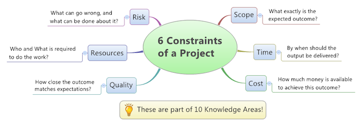
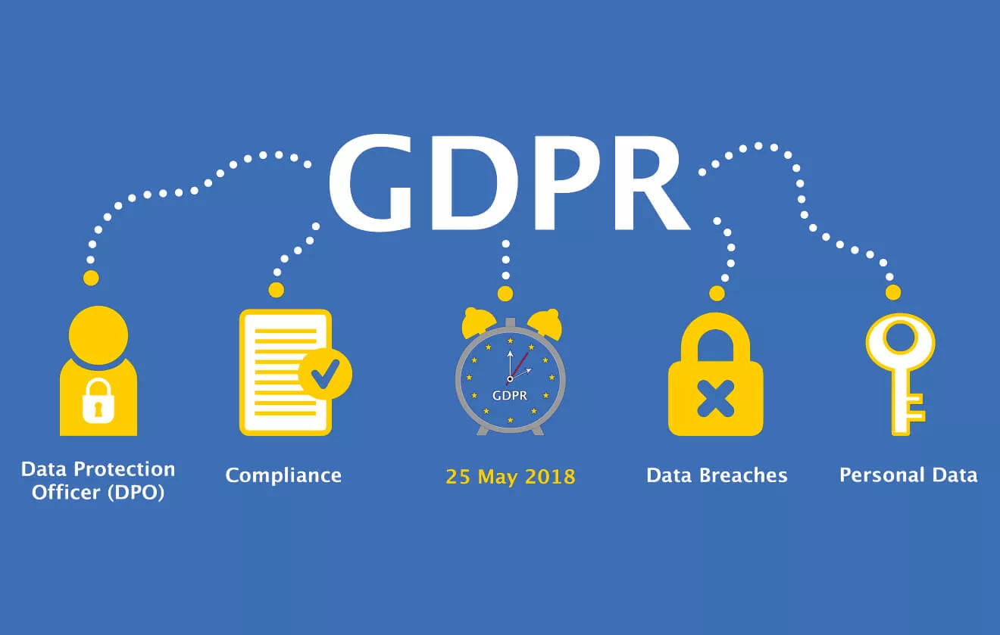

About me
Hello, my name is Kieron, I'm 23 years old born on 4th Marh 1996. I live in Oldham, which is a town in a place called Manchester.
It all began when I was born in Billinge Hospital which is in Wigan. I was brought up by mother, father and perhaps my older sister
until I was around 3 years old when my father left. Since then it has always been the three of us, me, my mother and my sister. We moved
to Oldham in 2005 to live closer to family members and as a concequence of this we have lived here ever since.
Why I wanted to join Code Nation?
When I first heard about Code Nation and the prgrammes they have in place were intruiging, I knew I had to find out more so then I can set myself a
challenge and complete the develop course then perhaps, go on to the master course.
I wanted to join Code Nation because I have always been interested in computers and have always wanted to learn how to code since I got my first
computer when I was young. Also, I've always been interested in learning how to make applications for iOS. Furhtmore,
I was told it wasn't like a school or work envriomnent which appealed to me massively. You have a sense of freedom and relaxation here
at Code Nation which I enjoy.
My interest in technology and coding
From a young age I have always been interested in games consoles, phones and computers. Ever since I can remember I've always had a games console,
wether that being a Playstation 1, Xbox 360 or a Tablet. Around a year ago I went on to YouTube and typed in 'how to code',
from there I have always had a passion for learning how to code and how to develop various technologies through it.
Although I didn't understand anything that was happening at that time I still wanted to learn more about it and physically type in a code and see it works.
What is the purpose of IT in modern business
Technology has important effects on business operations. No matter the size of your business, technology has various benefits that will help
you make money and produce the results your customers demand. Technological infrastructure affects the culture,
efficiency and relationships of a business. It also affects the security of confidential information and trade advantages.
Without Information Technology the world wouldn’t be where it is today.
My methods, skills and resources that I think are needed to complete digital projects successfully
- Communication - One of the essential skills for project management is the ability to communicate well –
understanding and being understood. Great communication is the crux of any relationship and so the effectiveness of a project manager’s
communication has an impact not only on the project team but the client and stakeholders too.
- Smart planning - Comprehensive planning sets up a project for success from the start. All project members should be on board during the
planning process and always know in which direction the project is going to go. Planning can help the team to meet deadlines and stay organised.
Good planning not only keeps the project team focused and on track. There are many benefits to smart planning.
- Negotiation - Project managers are always an easy target when projects don’t go to plan. Regardless of the circumstances,
everyone wonders whether the project manager could have foreseen and prevented the risk before it became an issue.
- Risk management - Everyone in the project developing world hate surprises and good risk management is one way of avoiding surprises,
especially the nasty ones. Risks are often not urgent which means many project managers fail to consider risks as seriously as they should.
You can stay on top of your project by controlling risk, and actively mitigating against it as far as you can.
My plan and carrying out tasks using I.T
Link to my Trello board
- Plan before you do - The best time to structure your website is before you even start designing it.
The site only needs to be a twinkle in your eye for you to begin the planning process.
- Symmetry is key - The human brain appreciates balance, so make sure your structure fits the bill. For example,
if I have four menu items — About, Portfolio, Work With Me, and Contact — make sure each of them have a similar number of sub-categories.
- Make Your Menu Front and Centre - Your menu is typically a horizontal list of links showing users how to navigate to other pages or
sections on your site, and it’s a best practice to place it up top. Whether you’re designing from scratch or using a website builder,
it’s vital that your menu is easy to find. Otherwise, your users simply aren’t going to be able to navigate around your site.
- Keep it simple - Finally, remember not to over-structure your site. We know it’s tough to condence your entire
body of work into one portfolio site, but there’s a reason one-page layouts are popular: our attention spans don’t have
much time for anything else.
What are the risks that might impact digital projects: what could go wrong?
Here are some examples of what could go wrong:
- You begin a 6-month long website build project. Two months in, Apple releases a new version of iOS,
and the site you have in development doesn’t work properly on the new iOS version.
- Halfway through a project, your company merges with another company, which has a very different go-to-market strategy.
- Three months into a website build project, a competitor releases a new site with a great new feature that could draw your customers away.
- A key team member departs your company for another opportunity mid-way through the project.
How I went about selecting and using IT systems and software
I would go about selecting what IT systems and software to use by checking the systems and software for suitability such as: Usability, Visualisation and
reporting, Security, Functionality, Support and development, Integration and Cost and suitability.
Systems software are programs that manage the resources of the computer system and simplify applications programming.
They include software such as the operating system, database management systems, networking software, translators, and software utilities.
How my chosen technologies have helped you achieve your outcomes
Link to my Trello board
Trello helped me achieve my outcomes because I could plan everything on my Trello board that I needed to include. Also it allowed me to break my
tasks down into smaller more achievable steps so the project didn't overwhelm me. Trello made it easy to add the information in because it's in much
smaller steps to make it easy to achieve my goals. Trello is a phenomenal project management tool, whether you need to organize the work of a
whole team or just want to boost your own productivity, also in Trello you can add subtasks, descriptions and attachments to your cards
which then would make it alot easier and clearer to understand and fulfill the tasks at hand. Furthermore, Trello can allow you to set
a due date on cards which is good for time management on certain tasks at hand.
Because GitHub is a repository, it allows your work to get out in front of the public. Moreover, it is one of the largest coding communities around, so using
it can provide wide exposure for your project and for you. The more people you have to review your project, the more attention and
use it is likely to attract
Legal guidelines and constraints that impact digital projects
Here are a few exmaples of project constraints that could impact digitial projects:
Cost,
Design,
Human Resources,
Legal,
Quality,
Risk tolerance, and
Time.
A project constraint is a definite and inflexible limitation or restriction on a project. All constraints are tradeoffs. If you constrain budget,
the project may be low quality. If you constrain time, you may face risks if the project is rushed. If you constrain risk,
the project may be slow and expensive.
GDPR
stands for General Data Protection Regulation.
This regulation has been implemented in all local privacy laws across the entire EU and EEA region.
It will apply to all companies selling to and storing personal information about citizens in Europe, including companies on other continents.
What GDPR means is that citizens of the EU (European Union) and EEA (European Economic Area) now have greater control over their personal data and
assurances that their information is being securely protected across Europe.
 
Access Issues
There are various access issues that people could face when using web pages such as;
visual impairment, which could be faced by having an option to make the text bigger or bolder.
Also another access issue is that an individual may not be English, so to combat this we would
an option to change the language on the webpage. Furthermore, another issue is that someone may
be blind and then will need a screen reader on the web page to gather the information required.
Reviews;
Review the ongoing use of IT tools and change approach as needed
– in making your own website, are you happy with the tools you used?
- The tools I used for making my website was Visual Studio Code and Trello.
Yes I am happy with them because Trello made it easy for me to put information onto my website
through making cards and splitting tasks down into more easier, managable steps.
Also, Visual Studio Code is easy to use which made it not a challenge to construct my website.
Describe whether the IT tools selected were appropriate:
- Yes the tools that were selected was infact appropaite because they gave
me the tools I needed to construct and finish my website without many difficult challenges.
Assess the strengths and weaknesses of your final project?
- One the weaknessess of my final project are that I'm not a CSS web designer,
so as a concequence of this I could have added a better colour scheme and made it much more pleasing
on the eyes. Also I could of made my final project more aesthetically pleasing and look much more
professional.
- The strengths of my final project are that my website has a variety of
information on many different things. Also my website has got pictures included which can give
the reader more information.
Improvements I could of made:
- I could of made various changes/improvements to make my final project look much more
professional by doing many things such as; adding buttons to easily navigate through different sections,
I could of also changed the colour sceheme of my final project to make it much easier to view and read.
Another improvment is I could of added more pictures to explain certain parts of my information, for example;
if it was an I.T question I could of added a picture of I.T somehow with information on the question asked.
Benefits and drawbacks of IT tools and systems/Improve own productivity:
- Working in teams could of increased the productivity and effiecny because
the people involved in the team could of had different roles, for example, one person could be
be delegated constructing the web page with html, and another individual could of had the role for
designing the web page. As a result of this the effiency and productivity would increase because
everyone is set different roles and can work on many things at one specific time instead of completeing
one task, then going on to another one. To improve my own productivity I would of
worked as part of a team because not everyone thinks the same and could have a better idea
on what information to put into the webpage or, different ideas on constructing it and chosing colour
schemes etc. Also it could of possibly made it quicker to construct because there are many people
giving you ideas, and helping you along the way.
Testing digital solutions:
- To go about testing digital solutions I would ask my peers to view my web page to ensure
that it works and everything is where it's meant to be, for example, if the pictures and information
have stayed in the right place, also user testing could give me constructive critism on what
I could possibly improve on and/or change on my web page.
Describing the content and layout for each page:
Link to my Trello board
Appropiate filetypes for websites
- The appropiate filetypes for websites is CSS and HTML.
CSS is the language for describing the presentation of Web pages, including colors, layout, and fonts.
It allows one to adapt the presentation to different types of devices, such as large screens, small screens, or printers.
HTML is the language for describing the structure of Web pages. HTML gives authors the means to:
- Publish online documents with headings, text, tables, lists, photos, etc.
- Retrieve online information via hypertext links, at the click of a button.
Testing my website
- I have tested my website on Google Chrome and Safari
to ensure that everything works smoothly on different web broswers.
I have added 2 screenshots on GitHub, 1 of my web page working on Google Chrome and the
other working on Safari.